Et udvalg af mine artikler
Mange af artiklerne er bragt i Zetland, de fleste handler om data, forskning, og hvordan vi prøver at forstå verdenen. Jeg skriver om ting, som interesserer mig.
- Det vrimler med gode råd om aktier. Men er de noget værd?
Den, der ved mest, tjener mest. Eller hvad?
Zetland, 10. april 2023
Professor emeritus med vid og bid
Læserne anmelder Weekendavisen
Weekendavisen, april, 2023Den ældste bestemmer, den yngste charmerer
Her er zombieteorien om søskende – og hvorfor den ikke vil dø
Zetland, 25. oktober 2022
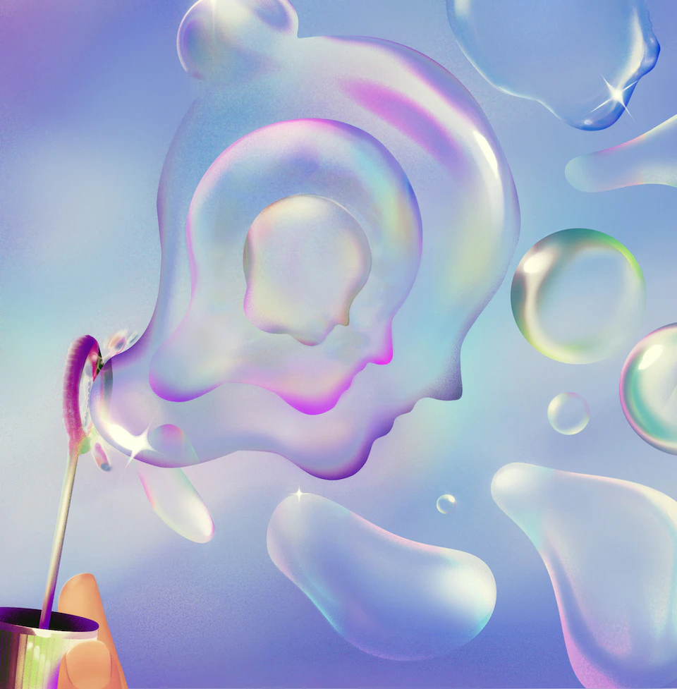
91,4 procent af danskerne elsker denne artikel. Eller gør de? Derfor skal du ikke stole på meningsmålinger
Ikke alle tal er lige gode.
Zetland, 28. maj 2022Kan en algoritme skabe noget smukt? Jeg byggede min egen for at skrive en sang
I stedet for at bekymre os om, at kloge computere udkonkurrerer os, bør vi måske spørge os selv, hvad vi kan udrette, hvis vi slår kræfterne sammen.
Zetland, 16. marts 2022
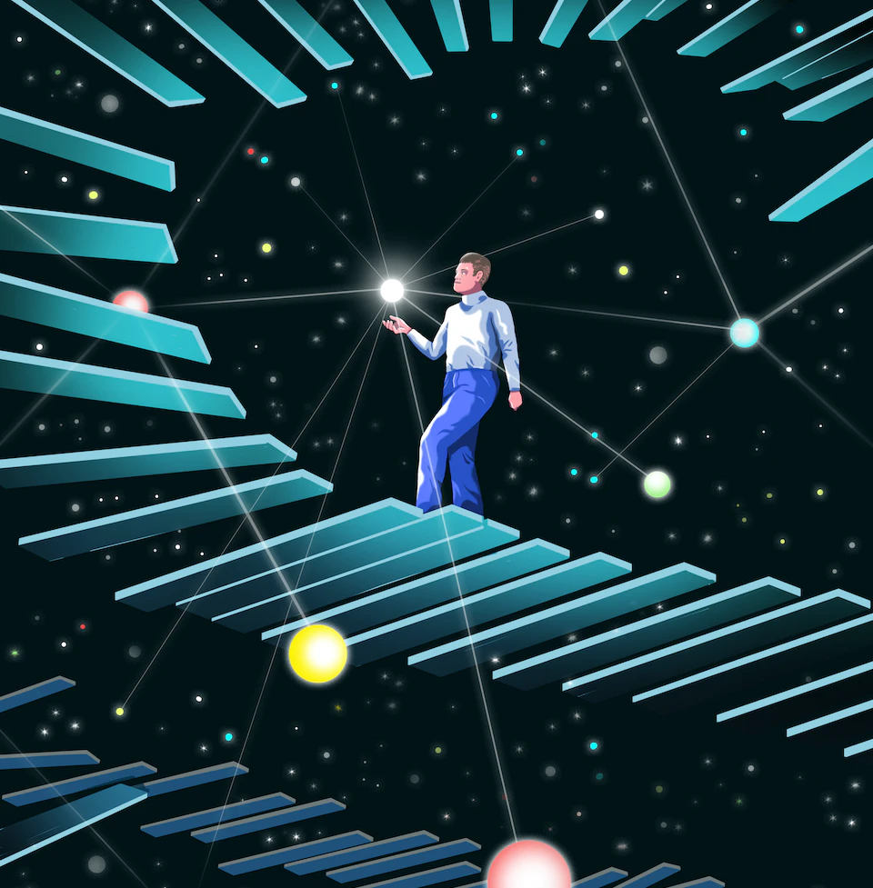
- Hvordan fikser vi trælse tv-debatter og uvenlige kommentarspor? Tænk som en spejder
At tænke som en spejder er at se tingene, som de er, og ikke som man ville ønske, at de var.
Zetland, 26. november 2021
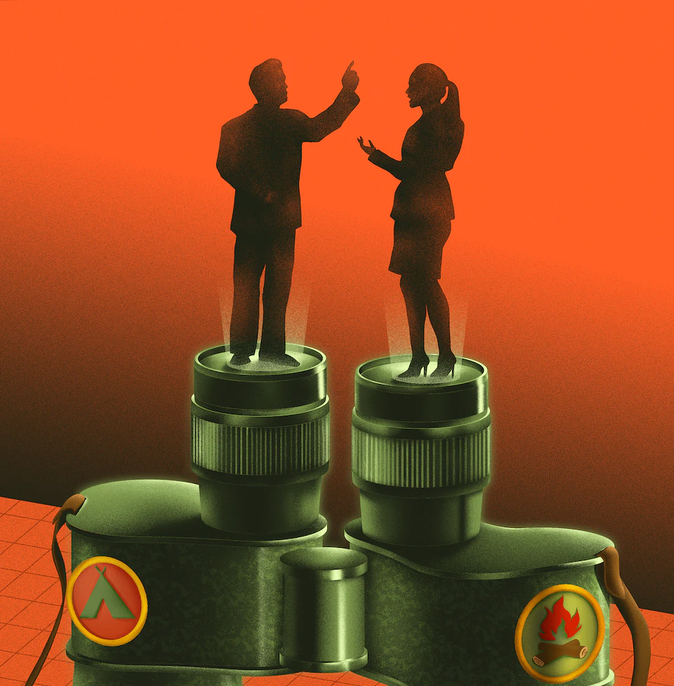
- Vores kamp mod døden er i den grad mod alle odds. Her er en plan for at vinde den
Hummere og molboøsters er praktisk talt udødelige. Så hvorfor skulle vi ikke også kunne blive det?
Zetland, 22. juli 2021
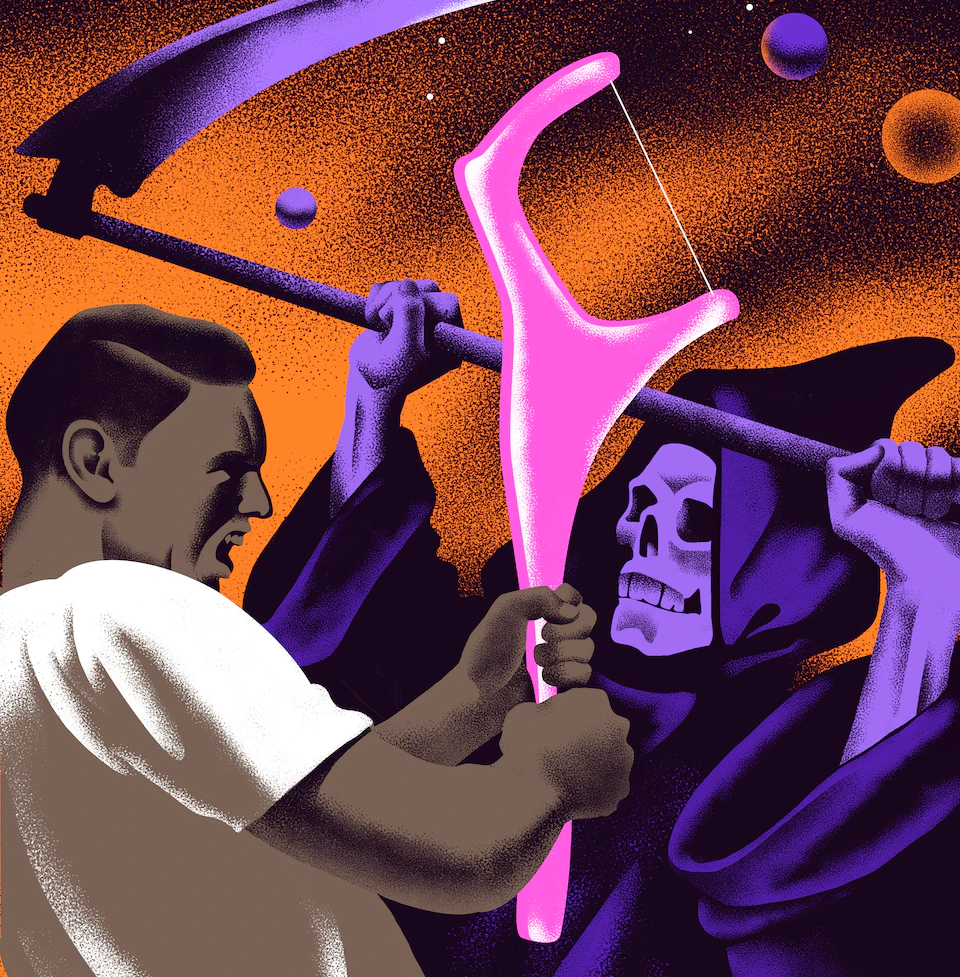
- Den her hat siger, at den kan få dig til at tænke bedre. Jeg satte mig for at undersøge, om det passede
Så disse linjer er skrevet under indflydelse af elektriske stimulanser i hjernen.
Zetland, 19. maj 2021
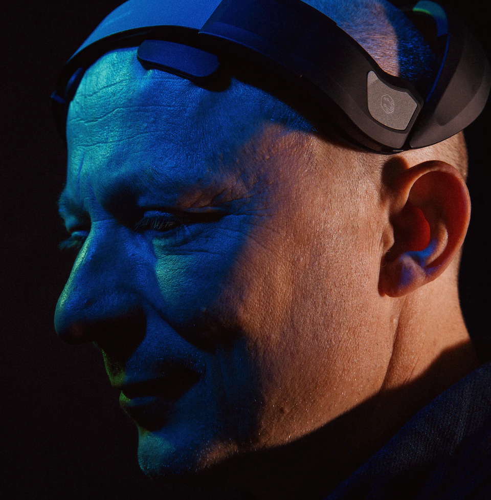
- Kender du dagene, hvor alting kører for dig? Forskerne var sikre på, at det bare var noget, sportsfolk bildte sig ind … indtil for nylig
Brydekampen mellem videnskabsfolk og sportsfolk har fra begyndelsen handlet om meget mere end sport.
Zetland, 3. marts 2021
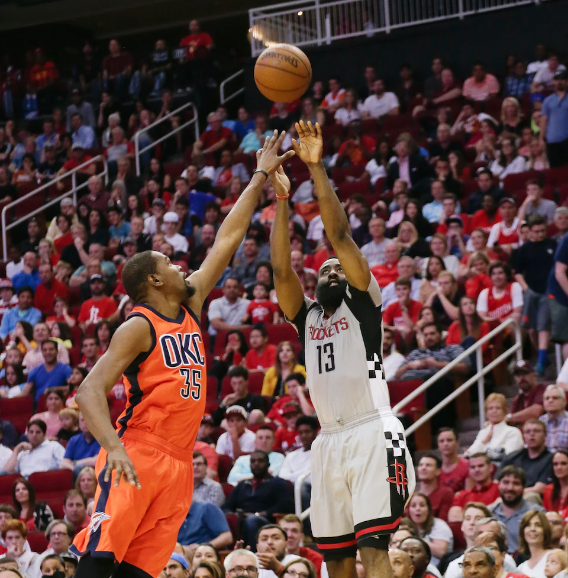
- Fra juledekorationer til slåskampe. Her er alt det tåbelige ved nutiden, vores efterkommere vil korse sig over
Hvilke af vores praksisser vil man i næste århundrede se tilbage på med undren og hovedrysten?
Zetland, 26. november 2020
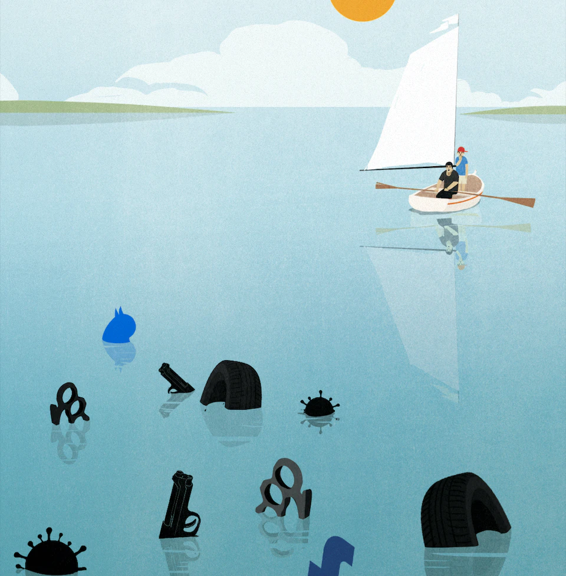
Sværd, møgguder og bibelsk hævnporno
Hvis Bibelen var en tv-serie, ville den være Game of Thrones – Koranen minder mere om Matador. En statistisk analyse af de to værker viser overraskende mønstre.
Weekendavisen, 29. maj 2020I 1995 byggede jeg min egen kunstige intelligens. Her er min guide til dig, der vil forstå tidens mest overvurderede teknologi
Skal man forstå udviklingen af moderne teknologi, skal man forstå, hvad kunstig intelligens er.
Zetland, 14. oktober 2019
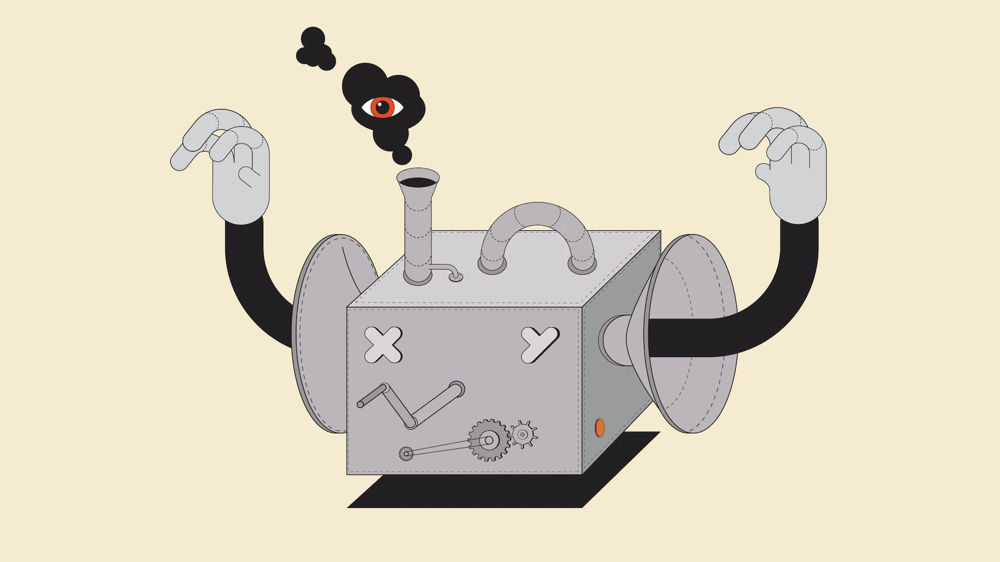
- Hvad jeg kan fortælle om statistikkens verden, der påvirker alle dele af vores liv – og, jo, det er på alle måder fascinerende
Statistik er noget nær menneskehedens største bedrift, mener journalist og matematiknørd Lasse Hjorth
Zetland, 26. juli 2019
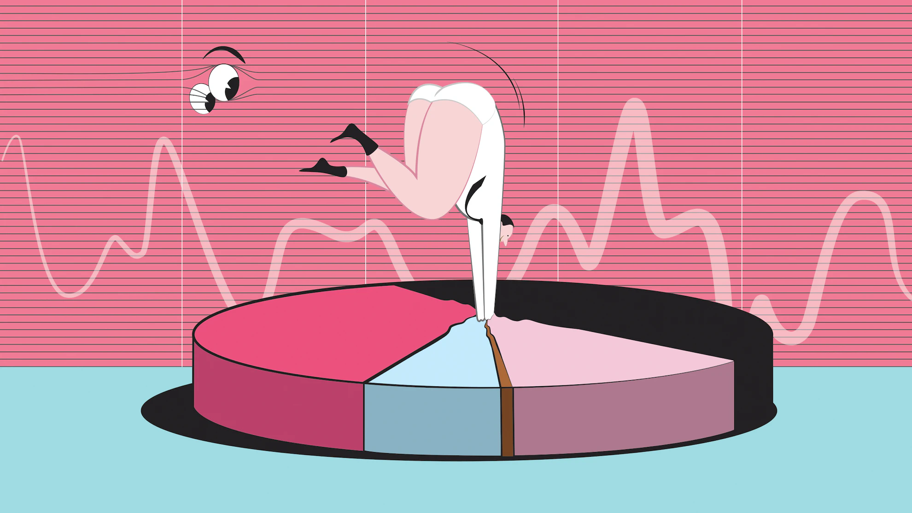
- Hvordan et netværk af politiske meningsdannere påvirker hinanden – og måske det kommende folketingsvalg
Sociale mediers indflydelse på den politiske proces er et af tidens store temaer. Men hvad skal der egentlig til for at påvirke den virale dagsorden?
Zetland, 1. maj 2019
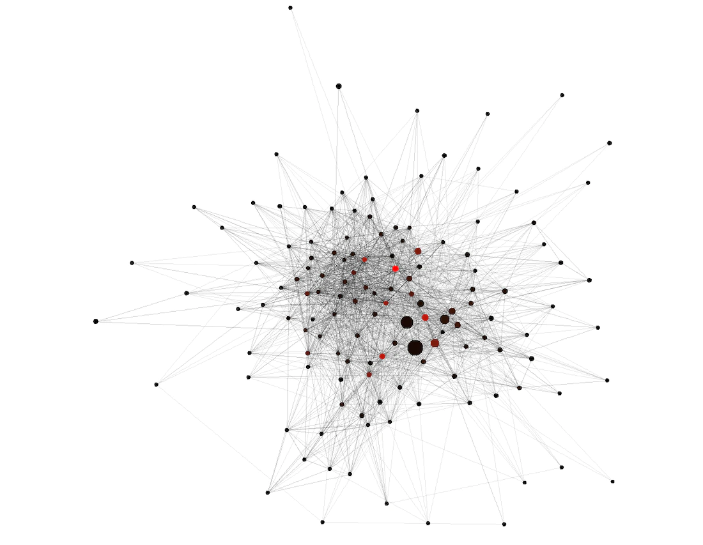
- Jeg byggede en algoritme for at finde min nye yndlingsbog (og lure, hvordan tech-giganternes mirakelværktøj virker)
Netflix gør det, Google gør det, datingsites gør det, politiet gør det – bruger big data og algoritmer til at finde frem til nålene i verdens store høstakke, hvad enten det handler om at finde din næste favorit-tv-serie, din nye kæreste eller løse en kriminalsag.
Zetland, 13. marts 2019

- Man kan lære meget af vinsmagningskonkurrencer. Hvordan vi misforstår verden omkring os, for eksempel
Som vi alle ved, findes der to kilder til sandhed: Den ene er data, den anden er vin. Denne historie rummer begge dele.
Zetland, 27. december 2018
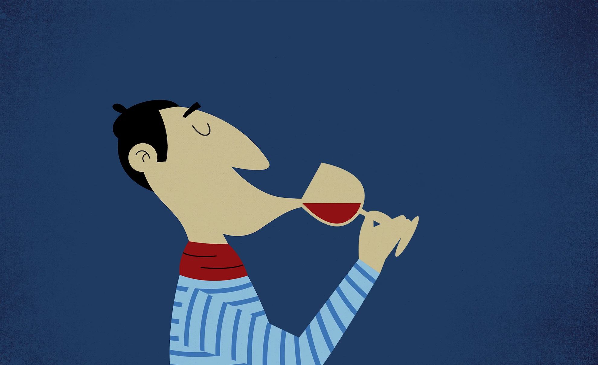
- Godt gemt i PISA-undersøgelsen ligger interessant data om mobning i Danmark. Her er den.
PISA-undersøgelsen af skolelevers fagkundskaber gemmer også på en stor portion data om mobning. Vi dykkede ned i tallene.
Zetland, 23. oktober 2018
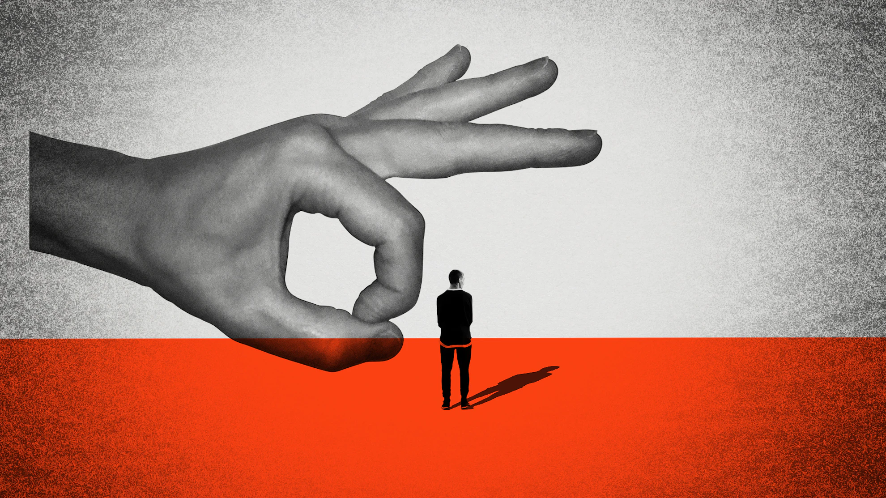
- Her er, hvad en enorm mængde data afslører om vores musiksmag (og sangteksters brug af ordet ‘baby’)
Vi har undersøgt et gigantisk datasæt over de mest populære popmusikere nogensinde, fra Beatles til Kanye West, fra Ed Sheeran til U2. Analysen fortæller, at kærlighedssangen er i krise – og at det, måske, er Madonnas skyld.
Zetland, 14. juni 2018
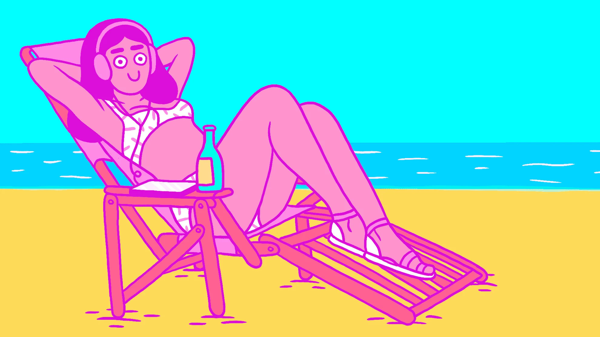
- Et dansk barn er langt mere bekymret for at blive testet end et hollandsk. Hvorfor?
Vi hører en hel del om Danmarks faglige placering på PISA-listen, men faktisk gemmer data på en anden, overset historie. Den handler om, hvordan de danske elever har det med at blive testet: Dét bekymrer de sig meget om.
Zetland, 15. januar 2018

- Læg ikke for meget i Danmarks placering på PISA-listen. Andre ting betyder mere, viser data
PISA-undersøgelsen står centralt i skoledebatten og bliver ofte brugt af regeringer til at forklare deres skolepolitik. Men analyserer man de nøgne data, er der faktisk meget lille forskel mellem sammenlignelige lande.
Zetland, 5. juli 2017
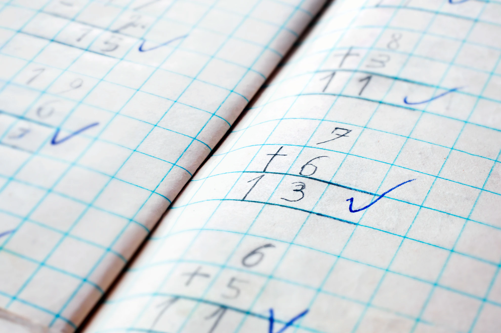
Kønne tal
Tekst og tal. 63 procent af boganmeldelserne i danske medier omhandler bøger skrevet af mænd, selvom kvinderne er mest populære blandt læserne. Kønsforskellen er især udtalt i de store, toneangivende medier.
Weekendavisen, 24. maj 2017Er der penge i hjerterne?
Tekst og tal. Alle er enige om, at gode anmeldelser betyder meget for en bogs succes hos læserne. Der er bare ét problem: Det passer ikke.
Weekendavisen, 2. december 2016Den lille forskel
Kommentar. Kvindelige forfattere bliver – i gennemsnit – anmeldt lidt dårligere end mandlige. Forskellen er lille, men som enhver krimielsker ved, dækker et lille mysterium ofte over et større.
Weekendavisen, 12. august 2016Danmarks sødeste boganmelder
Tekst og tal. 14.443 boganmeldelser kan ikke tage fejl. Hvad kan kritikerne lide, og hvad kan de ikke lide? Og hvem er egentlig Danmarks sødeste boganmelder?
Weekendavisen, 22. juli 2016